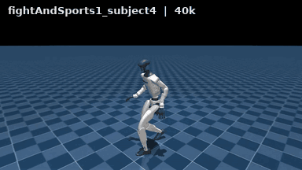
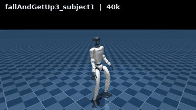

SuperMimic · LAFAN1 demo GIFs
40k checkpoint · RTX 5080 16GB · 15 s excerpts at 384 px / 12 fps · full 30–40 s videos below




GIFs are 15 s excerpts taken from long LAFAN1 clips (30–40 s of continuous rollout each).
The policy is deterministic; no observation noise, no reset noise, no domain randomization,
foot friction 1.0. Excerpts start at an offset inside the clip, so this gallery is a
demo, not the evaluation protocol — the benchmark always plays each clip from its
first frame to the end. The reference ghost is disabled here for a cleaner image.